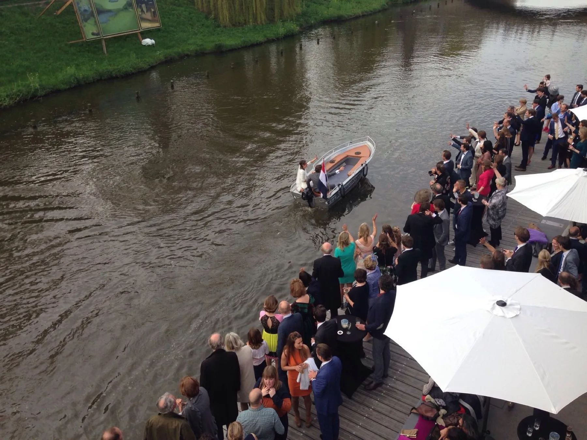
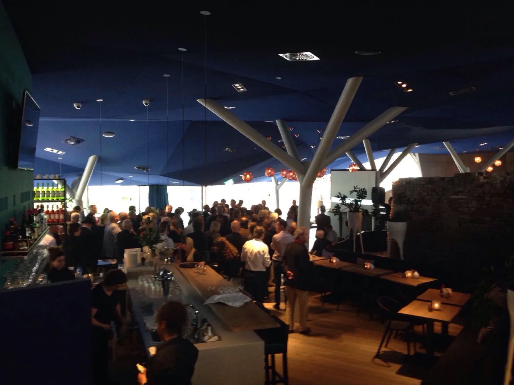
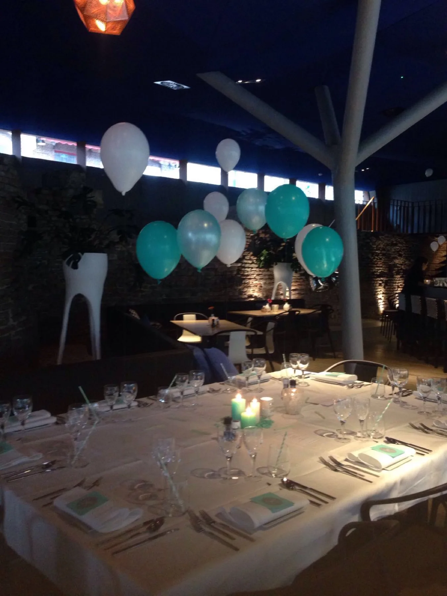

We gaven hier onze bruiloft en het was een geweldige locatie. Behulpzame bediening, een fantastische sfeer, en alles op loopafstand van het station. Een aanrader.
Geert Rademakers
trouwde bij Bolwerk
trouwde bij Bolwerk

Van intiem groepsdiner tot bruiloft of receptie: vertel ons je plan, dan denken Robbert en Maaike met je mee.


Elk feest is maatwerk: er liggen geen standaardpakketten klaar, er ligt een gesprek klaar.
We gaven hier onze bruiloft en het was een geweldige locatie. Behulpzame bediening, een fantastische sfeer, en alles op loopafstand van het station. Een aanrader.
Vul het formulier in en Robbert van Elk of Maaike van Eldik neemt persoonlijk contact met je op om de mogelijkheden en de datum door te spreken. Vrijblijvend, en zonder standaardantwoorden.
Ook een nieuwjaarsreceptie met honderden gasten kan: gasten schreven erover in de reviews.
We hielden hier onze nieuwjaarsreceptie en alles was goed georganiseerd. Het eten was prima verzorgd, ondanks dat we met driehonderd mensen waren, en de sfeer was uitstekend.